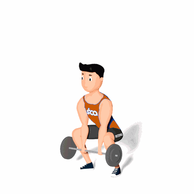

Levantamento Terra Sumô

Neste exercício temos um recrutamento maior do vasto medial e do vasto lateral que são músculos do quadríceps. Além disso, também consegue gerar um grande estímulo na região da tibial anterior.
Ficha Técnica
Tipo: Musculação
Grupo Muscular: Perna
Aparelho: Nenhum
Músculos: Nenhum
Como realizar
- Posicione-se com os pés separados a uma distância duas vezes maior que a largura dos ombros;
- Fique com os dedos dos pés inclinados para fora e uma barra acima dos pés apoiada nas canelas;
- Sem curvar a região lombar, flexione os joelhos e pegue a barra com ambas as mãos;
- Com um único movimento, faça força com os tornozelos, empurre os quadris para a frente e se levante o mais rápido possível;
- Faça uma pausa e depois reverta o movimento empurrando os quadris para trás e retornando à posição inicial.
 RC STORE
RC STORE